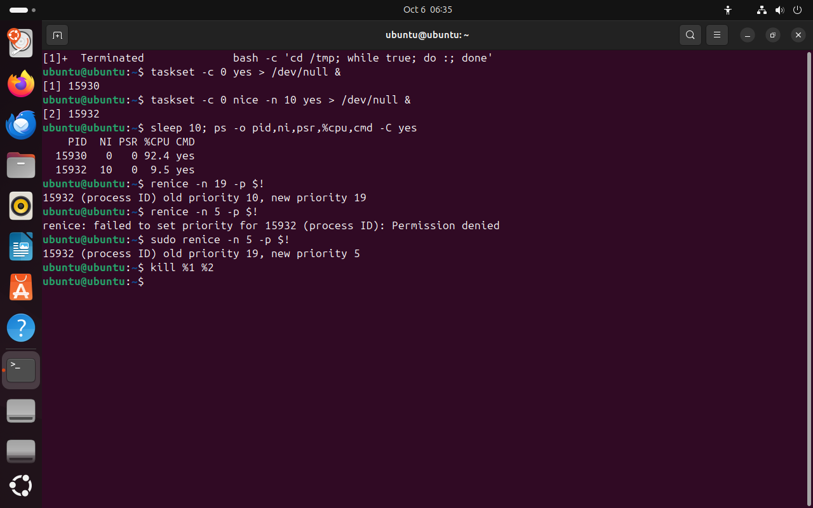

Часть 4 из 7
Приоритет процесса: nice и renice
В этой части разберём, как планировщик делит процессор между процессами, что меняет число nice и кто имеет право его менять.
4.1 Планировщик и nice
Процессов, готовых к работе, обычно больше, чем ядер. Решает, кто сейчас выполняется, планировщик — часть ядра. Он даёт каждому процессу короткий отрезок времени и переключается на следующего. Переключения происходят сотни раз в секунду, поэтому кажется, что все процессы работают одновременно.
Слово nice по-английски значит «вежливый». Процесс с nice 19 — самый вежливый посетитель: он пропускает вперёд всех. Если очереди нет, он проходит сразу. Процесс с nice −20 проходит без очереди.
Каждая единица nice меняет долю процессора примерно на 10 %. Разница в 10 единиц даёт соотношение примерно 9 к 1, разница в 19 — около 70 к 1. Схема ниже считает доли по тем же весам, что и планировщик Linux.
4.2 Команды nice и renice
nice -n N команда запускает новую программу с поправкой N. renice -n N -p PID меняет поправку процесса, который уже работает. В top столбец PR равен 20 + nice, поэтому процесс с nice 19 показан с PR 39.
| Кто | Что может |
|---|---|
| обычный пользователь | только увеличить nice своих процессов: от 0 до 19 |
| root | любое значение от −20 до 19 у любого процесса |
Ограничение защищает систему: если бы каждый мог ставить своим процессам nice −20, все бы так и сделали. Уменьшить nice, даже вернуть прежнее значение, может только root. Поэтому понижать приоритет нужно обдуманно.
nice ставят фоновым тяжёлым задачам: резервному копированию, сжатию архивов, сборке программ. Тогда они работают в свободное время процессора и не мешают пользователям.
В опыте два процесса yes привязаны командой taskset -c 0 к одному ядру номер 0, чтобы им пришлось его делить. Ключ -C yes у ps выбирает процессы по имени, столбец psr показывает номер ядра.
taskset -c 0 yes > /dev/null &# nice 0что делает
Что делает команда. Запускает в фоне yes, привязанный к ядру 0.
По частям:
taskset- запустить программу только на указанных ядрах
-c 0- номера ядер, на которых можно работать: 0
yes- бесконечно печатать строку y
>- записать вывод в файл
/dev/null- устройство, которое выбрасывает всё записанное
&- запустить команду слева в фоне и сразу продолжить
taskset -c 0 nice -n 10 yes > /dev/null &# nice 10что делает
Что делает команда. Запускает в фоне yes с nice 10 на том же ядре 0.
По частям:
taskset- запустить программу только на указанных ядрах
-c 0- номера ядер, на которых можно работать: 0
nice- запустить программу с поправкой приоритета
-n 10- поправка приоритета: 10
yes- бесконечно печатать строку y
>- записать вывод в файл
/dev/null- устройство, которое выбрасывает всё записанное
&- запустить команду слева в фоне и сразу продолжить
sleep 10; ps -o pid,ni,psr,%cpu,cmd -C yes# как разделилось ядрочто делает
Что делает команда. Ждёт 10 секунд и выводит для процессов yes номер, nice, ядро и загрузку процессора.
По частям:
sleep- ничего не делать указанное число секунд
10- сколько секунд
;- разделитель: выполнить следующую команду после этой
ps- вывести сведения о процессах
-o pid,ni,psr,%cpu,cmd- выводить столбцы pid,ni,psr,%cpu,cmd
-C yes- выбрать процессы с именем yes
renice -n 19 -p $!# ещё уступчивеечто делает
Что делает команда. Меняет nice последнего фонового процесса на 19.
По частям:
renice- изменить поправку приоритета работающего процесса
-n 19- новое значение nice: 19
-p $!- какой процесс: PID последнего процесса, запущенного в фоне
renice -n 5 -p $!# вернуть назадчто делает
Что делает команда. Пытается уменьшить nice последнего фонового процесса до 5 от имени обычного пользователя.
По частям:
renice- изменить поправку приоритета работающего процесса
-n 5- новое значение nice: 5
-p $!- какой процесс: PID последнего процесса, запущенного в фоне
sudo renice -n 5 -p $!# от имени rootчто делает
Что делает команда. Уменьшает nice последнего фонового процесса до 5 от имени root.
По частям:
sudo- выполнить следующую команду от имени root
renice- изменить поправку приоритета работающего процесса
-n 5- новое значение nice: 5
-p $!- какой процесс: PID последнего процесса, запущенного в фоне
kill %1 %2# завершить обачто делает
Что делает команда. Посылает TERM заданиям 1 и 2 текущей оболочки.
По частям:
kill- послать процессу сигнал
%1- какому процессу, задание номер 1
%2- какому процессу, задание номер 2
- 1nice 0: 92 % ядра
- 2nice 10: 9,5 % ядра
- 3PSR 0: оба на одном ядре
- 4пользователь увеличил nice с 10 до 19
- 5уменьшить nice нельзя
- 6root уменьшил nice до 5


Весь снимок ↗Доли ядра у процессов с nice 0 и 10, отказ и разрешение renice.
Что показывает снимок. Два процесса yes на ядре 0 разделили его как 92,4 к 9,5 %: так и считает планировщик для nice 0 и 10. Пользователь увеличил nice до 19, но вернуть 5 не смог — Permission denied. Через sudo root это сделал.
Где это пригодится. Тяжёлые фоновые задачи запускают через nice -n 19: при свободном процессоре они работают в полную силу, а при занятом уступают пользователям.
Итоги части 4
- Планировщик делит процессор между готовыми процессами; nice от −20 до 19 задаёт долю при борьбе за ядро.
- Каждая единица nice — примерно 10 % доли; при свободном процессоре nice ничего не меняет.
nice -n N команда— запуск с поправкой,renice -n N -p PID— изменить у работающего процесса.- Пользователь может только увеличить nice своих процессов, уменьшить — только root.
В отчётСнимок с двумя процессами yes на одном ядре: объясните доли 90 и 10 % и отказ renice.